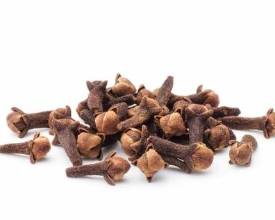
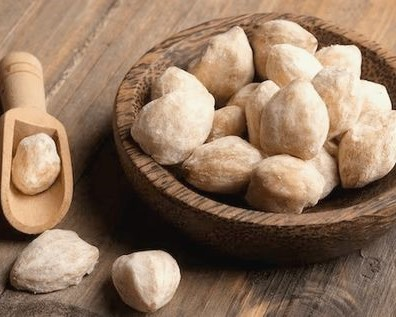
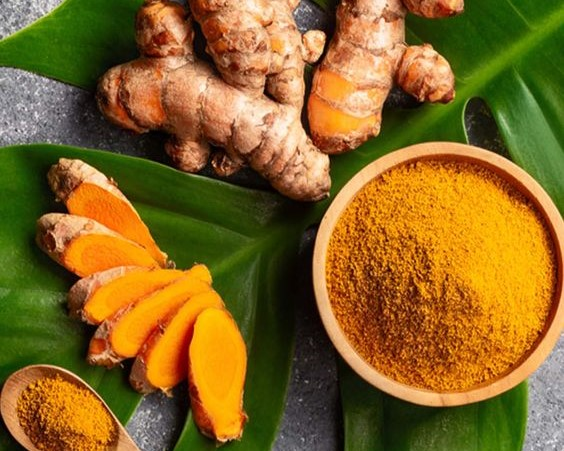

Selamat Datang di Dunia Rempah-Rempah!
Menemukan Keajaiban Rasa dan Aroma
Rempah-rempah

Pala (Myristica fragrans)
Pala memberikan rasa gurih dan aroma khas yang banyak dicampurkan ke dalam hidangan berkuah, saus, hingga dessert dan minuman. Provinsi Maluku Utara, Aceh, dan Sulawesi Utara dikenal sebagai kawasan utama penghasil pala di Indonesia.
2.jpg)
Lada hitam (Piper nigrum)
Lada hitam berasal dari buah lada yang dikeringkan. Rempah ini memberikan rasa pedas pada masakan. Lampung dan Bangka Belitung dikenal sebagai wilayah penghasil lada terbesar di Indonesia.

Kemiri (Aleurites moluccanus)
Biji kemiri atau candlenut banyak digunakan sebagai penambah aroma dan rasa gurih pada masakan. Tanaman kemiri tumbuh dengan mudah di daerah beriklim tropis.Sumatra Utara, Nangroe Aceh Darusalam, Jawa, Bali, hingga wilayah Nusa Tenggara menjadi daerah penghasil rempah ini.
4.jpg)
Kayu manis(Cinnamomum burmannii)
Kayu manis diambil dari kulit kayu pohon kayu manis. Seperti namanya, rempah ini memberikan rasa manis dan aroma khas. Hal tersebut membuatnya banyak digunakan pada makanan penutup dan minuman. Sumatra Barat dan Jambi dikenal sebagai penghasil kayu manis di Indonesia.

Kunyit (Curcuma longa)
Kunyit atau kunir merupakan bagian rimpang tanaman kunyit. Rimpang ini memberikan warna kuning oranye dan rasa 'earthy' pada masakan. Selain itu, kunyit juga dikenal sebagai tanaman rempah yang berkhasiat obat. Kunyit banyak diproduksi di Jawa Timur dan Jawa Barat.